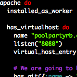
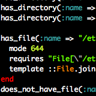
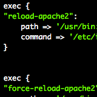
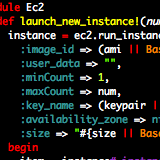

PoolParty!
PoolParty makes it easy to use the power of cloud computing to power your application. PoolParty enables you to create web applications running on cloud computing services such as Amazon EC2 with built-in scaling, monitoring, load-balancing and much more.
Simple, easy configuration
A single-file poolspec configuration file allows you to verbosely describes exactly how your cloud should be setup.
Extensible, extendable and plug-and-play
PoolParty helps you build your cloud the way you want and gives you the ability to easily extend it to include your own requirements and software.
Inline integration
PoolParty integrates well with the tools you already know well and work with. No need to change workflow or
PoolParty makes it easy to develop against as well. With git-style commands, easy configuration files, generators and more, you have no excuse to not try it out! It's so simple!
At PoolParty's core is Puppet, a highly scalable, robust open-source systems administration framework. It's powerful enough for Google to be using it, why shouldn't you?
Built from the ground-up to be highly extensible, PoolParty makes it easy to add features if what you need is not already built in.
   
PoolParty uses Haproxy and the Linux High Availability's Heartbeat to manage the load-balancing and failover safety. It's extensible load monitoring system is written in the highly-scalable language erlang to give your instances maximum connectivity to your cloud.